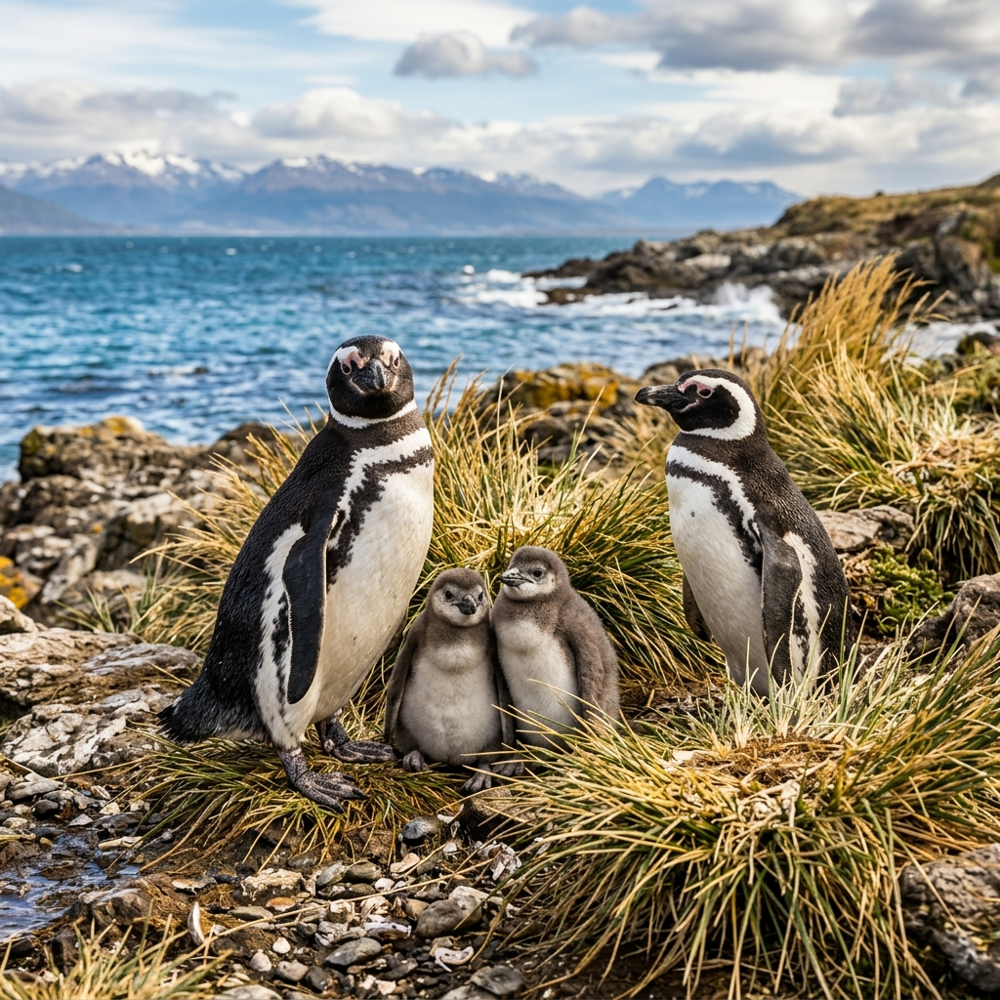
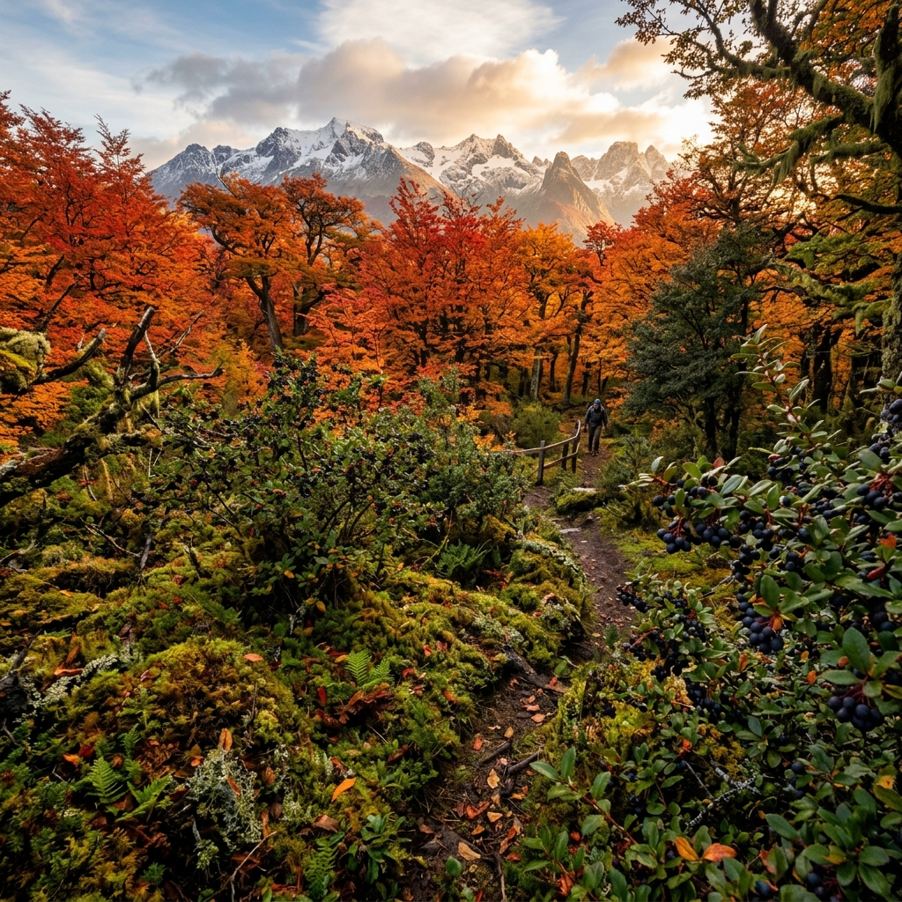
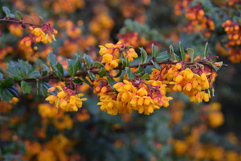
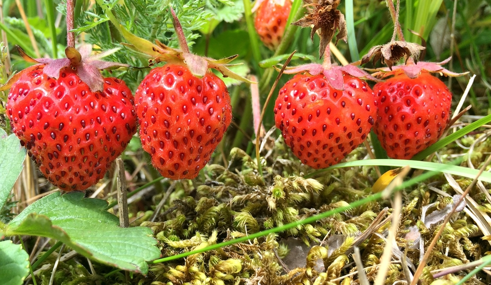
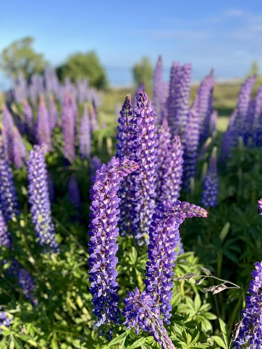
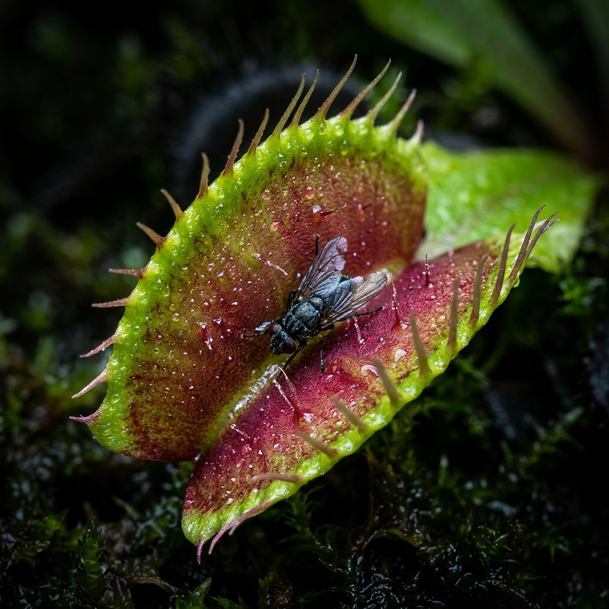
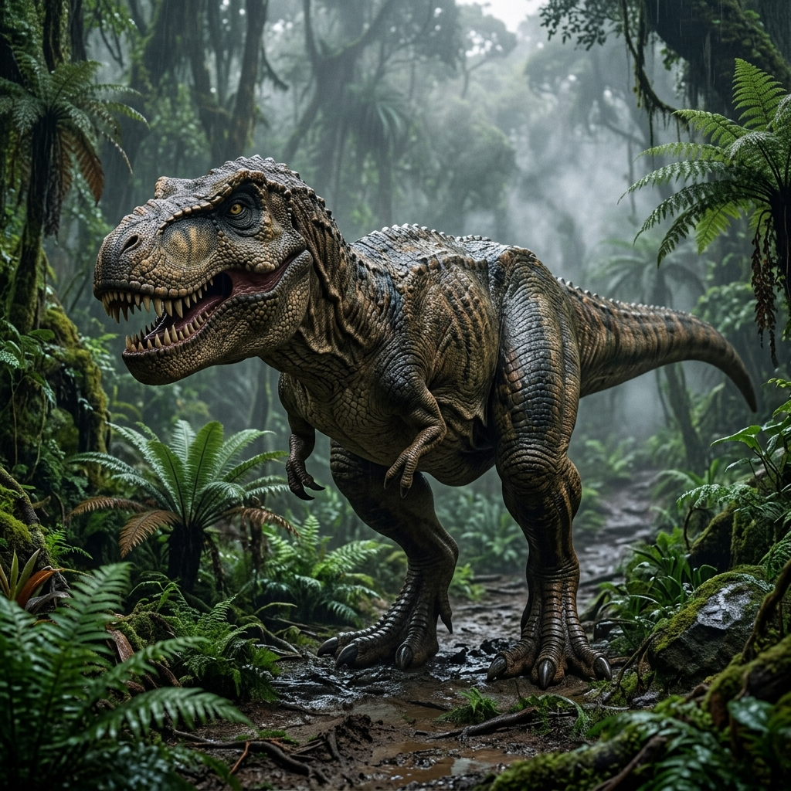
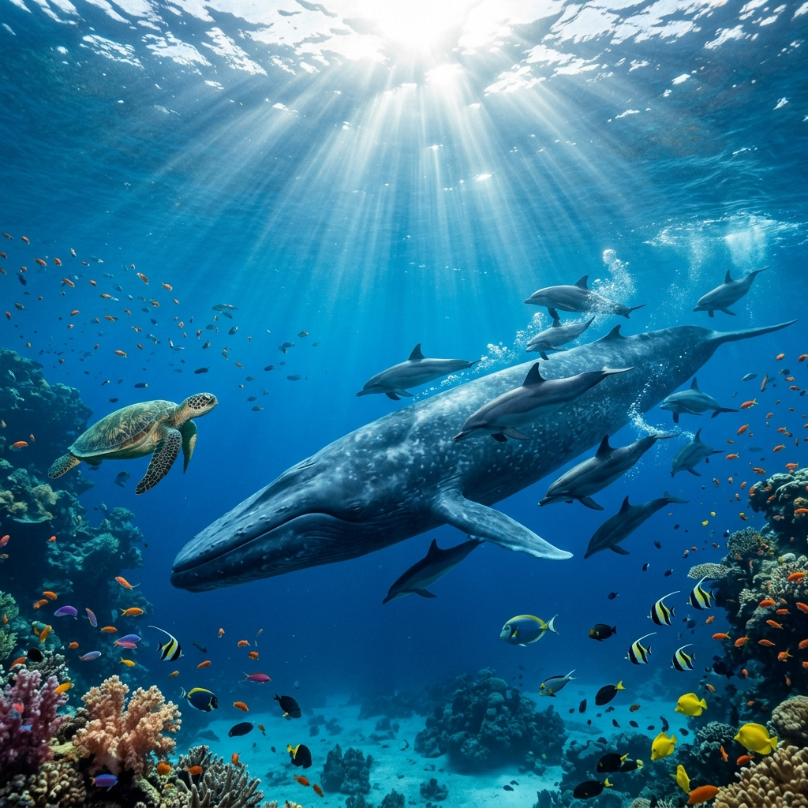
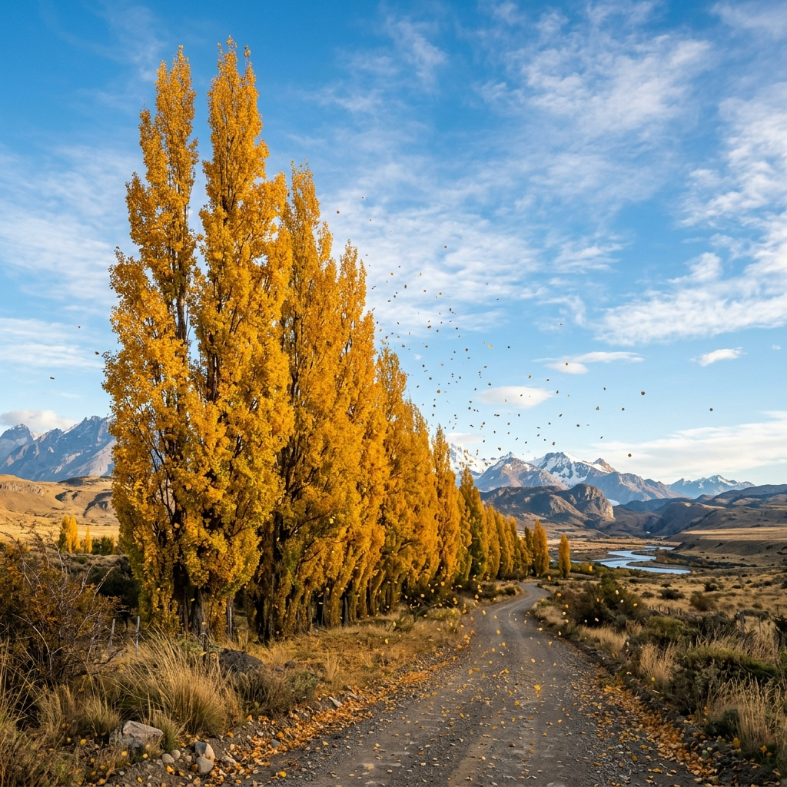

¡Bienvenido, hijo!
Pepe y tú van a explorar un mundo increíble 🌍
Pepe y tú van a explorar un mundo increíble 🌍

Descubre los animales, plantas y secretos más increíbles de Punta Arenas, la Patagonia y todo el planeta
¡Conoce los animales más asombrosos que viven en la Patagonia chilena!

Estos simpáticos pingüinos viven en grandes colonias cerca de Punta Arenas. Miden entre 60 y 75 cm y pesan alrededor de 4 kilos. ¡Pueden nadar a velocidades de hasta 25 km/h persiguiendo peces!
¡El ave voladora más grande del mundo! Sus alas pueden medir más de 3 metros. Vuela sobre los Andes patagónicos sin batir las alas, usando las corrientes de aire.
Es el zorro más grande de Chile. Tiene un pelaje rojizo-gris hermoso y es muy astuto. Come ratones, liebres y hasta frutos silvestres del bosque patagónico.
Es el ciervo más austral del mundo y está en el escudo de Chile. Es tímido y vive en los bosques de la Patagonia. ¡Está en peligro de extinción y debemos cuidarlo!
Vive en las costas del Estrecho de Magallanes. Los machos pueden pesar hasta 300 kilos. ¡Les encanta tomar sol sobre las rocas y son excelentes nadadores!
Es un ganso patagónico muy elegante. El macho es blanco y la hembra tiene rayas cafés. Siempre andan en pareja y cuidan mucho a sus crías en las praderas.
¡Es el gato salvaje más pequeño de América! Mide solo 40 cm y vive escondido en los bosques. Es nocturno y casi nadie logra verlo. ¡Una criatura misteriosa!
Es el felino más grande de Chile y el rey de la Patagonia. A pesar de su tamaño, no ruge como un león, sino que ronronea como un gatito gigante. ¡Son increíbles saltadores!
Es un pariente salvaje de las llamas. Viven en grandes manadas en la estepa de Punta Arenas y pueden correr rapidísimo (¡hasta 60 km/h!) para escapar de los pumas.
Las plantas más resistentes del mundo crecen aquí, soportando vientos de más de 100 km/h
Los bosques nativos de Punta Arenas están formados principalmente por lengas y coigües de Magallanes. En otoño, las lengas se visten de rojo, naranja y dorado, creando paisajes espectaculares.


Es un árbol que se llena de flores rojas brillantes en primavera. Crece en los bordes de los bosques y cerca de ríos. ¡Es como un semáforo rojo natural en medio del verde!

Los bosques patagónicos están cubiertos de musgos esponjosos verde esmeralda y líquenes que cuelgan de las ramas como barbas de duende. ¡Parecen bosques de cuentos de hadas!

Este arbusto tiene espinas largas y flores amarillas como campanas pequeñas. Sus frutos azules son alimento para los pájaros. ¡Es una planta guerrera que sobrevive al frío extremo!

Un arbusto con espinas y flores amarillas que da unos frutos de color oscuro muy dulces. Dicen que si comes frutos de este arbusto en la Patagonia... ¡siempre volverás allí!

Una plantita pequeñita que crece casi pegada al suelo. En verano da unas frutillas muy chicas que esconden el sabor más dulce e intenso que un niño pueda probar jamás en el bosque.

Son flores altas y coloridas que adornan los caminos de la Patagonia en verano. ¡Tienen un tallo tan largo que parecen varitas mágicas cubiertas de campanitas moradas, rosadas y azules!
¡Plantas que comen insectos! Son como los dinosaurios del mundo vegetal

¡La planta carnívora más famosa del mundo! Tiene hojas que parecen bocas con dientes. Cuando un insecto toca los pelitos dentro de la trampa, ¡las hojas se cierran en menos de medio segundo!
Tiene hojas en forma de jarra llenas de líquido pegajoso. Los insectos resbalan y caen adentro. ¡Algunas son tan grandes que pueden atrapar ratones!
Tiene tentáculos con gotitas brillantes que parecen rocío pero son pegamento natural. Los insectos quedan pegados y la planta los envuelve lentamente. ¡Existe en Chile!
Parece una trompeta colorida. Los insectos entran atraídos por su néctar dulce y resbalan por las paredes lisas hasta el fondo donde son digeridos.
Hace millones de años, criaturas gigantes caminaban por la Patagonia
¿Sabías que en la Patagonia se han encontrado algunos de los dinosaurios más grandes que existieron? ¡La tierra donde vive Vicente fue hogar de gigantes!

El T-Rex medía 12 metros de largo y tenía dientes del tamaño de plátanos. A pesar de sus bracitos cortos, era el depredador más temible de su época. Podía morder con una fuerza de 6 toneladas, suficiente para aplastar un auto.
🦷 Tenía más de 50 dientes que se reemplazaban constantemente. ¡Si se le caía uno, le crecía otro!
Este gigante herbívoro medía 35 metros de largo y pesaba unas 70 toneladas. ¡Era tan alto como un edificio de 7 pisos! Comía plantas todo el día y vivía en manadas para protegerse.
🥬 Necesitaba comer más de 400 kilos de plantas cada día. ¡Imagina cuánta ensalada es eso!
¡Sorpresa! El Velocirraptor real era del tamaño de un pavo y ¡tenía plumas! Pero era muy inteligente y cazaba en grupo. Tenía una garra especial en cada pata que usaba como un cuchillo.
🧠 Era uno de los dinosaurios más inteligentes. Su cerebro era grande en comparación con su cuerpo.
Tenía 3 cuernos en la cabeza y un escudo óseo enorme. Medía 9 metros y pesaba como 2 elefantes. Era herbívoro pero podía defenderse de un T-Rex con sus cuernos afilados.
🔨 Su pico era tan fuerte que podía cortar plantas duras como tijeras de jardín gigantes.
Los insectos son los animales más numerosos del planeta. ¡Hay más de 1 millón de especies!

Los insectos son verdaderos superhéroes de la naturaleza. Algunos pueden cargar 50 veces su peso, otros brillan en la oscuridad y algunos pueden caminar sobre el agua.

Visita hasta 5.000 flores en un solo día para hacer miel. Para producir 1 kilo de miel, las abejas deben visitar ¡4 millones de flores!

Viaja más de 4.000 kilómetros en su migración. ¡Es como si fueras caminando de Punta Arenas a Lima sin parar!

Son granjeras: cortan hojas y las usan para cultivar un hongo especial que es su comida. ¡Inventaron la agricultura millones de años antes que nosotros!

¡Producen su propia luz! Usan una reacción química en su cuerpo para brillar en la oscuridad. Cada especie tiene su propio patrón de parpadeo.
El océano que rodea Punta Arenas está lleno de vida increíble
Estos gigantes gentiles pasan por el Estrecho de Magallanes durante su migración. Pueden medir 16 metros y pesan hasta 40 toneladas. ¡Son famosas por sus cantos que se escuchan a kilómetros bajo el agua!


Vive en los canales patagónicos y es uno de los delfines más pequeños del mundo. Le encanta surfear en las olas de los barcos. ¡Puede saltar hasta 2 metros fuera del agua!
Tiene 3 corazones, sangre azul y 8 brazos con ventosas. Puede cambiar de color en menos de 1 segundo y es tan inteligente que puede abrir frascos con tapa de rosca.

¡El cangrejo gigante de Punta Arenas! Puede medir hasta 50 cm con sus patas extendidas. Vive en las frías aguas del estrecho y es famosa en todo el mundo.
Nuestros mejores amigos peludos tienen secretos increíbles
Los gatos y perros han vivido junto a los humanos durante miles de años. Cada uno tiene habilidades especiales que los hacen únicos.
Los gatos duermen entre 12 y 16 horas al día. ¡Más de la mitad de su vida la pasan durmiendo! Pero se despiertan al instante si escuchan un sonido interesante.
Existen más de 340 razas de perros. Desde el diminuto Chihuahua de 15 cm hasta el Gran Danés que puede medir 1 metro de alto. ¡Todos descienden del lobo!
El ronroneo del gato vibra entre 25 y 150 Hz. ¡Esa frecuencia puede ayudar a sanar huesos y reducir el estrés! Tu gato es como un doctor peludo.
Los perros pueden ser entrenados para detectar enfermedades, guiar ciegos, rescatar personas en avalanchas y hasta detectar terremotos antes de que ocurran.
Los árboles son los pulmones de nuestro planeta y hogar de miles de animales
Los álamos fueron traídos a la Patagonia hace mucho tiempo. Con sus hojas doradas en otoño, forman cortinas de viento que protegen casas y cultivos del poderoso viento patagónico que puede soplar a más de 100 km/h.

.jpg)
¡Este árbol chileno tiene 200 millones de años! Existía cuando había dinosaurios. Sus piñones son deliciosos y los mapuche los llaman "ngüilliu".

El alerce del sur de Chile puede vivir más de 3.600 años. ¡Es el segundo árbol más longevo del mundo! Crece solo 1 milímetro de ancho por año.

¡Puede almacenar 120.000 litros de agua en su tronco! Parece que estuviera plantado al revés, con las raíces hacia el cielo. Vive más de 1.000 años.
Es el árbol más alto del mundo: ¡mide más de 100 metros! Eso es como un edificio de 30 pisos. Vive en California y puede tener 2.000 años de edad.
¡Estas especies crecen en la Patagonia! y ¡aqui en Punta Arenas!
.gif)
Es el árbol más famoso de nuestra zona. En otoño, sus hojas cambian de color a un rojo brillante, ¡parece que el bosque estuviera en llamas!
.jpg)
Un árbol siempre verde que nunca pierde sus hojas, incluso en el invierno más frío. Es un gigante que protege a los demás animales del bosque.
.webp)
Muy valiente y resistente. Cuando el viento sopla muy fuerte, el Ñirre se dobla pero no se rompe. ¡Es un verdadero guerrero de la Patagonia!
.gif)
Le encanta vivir cerca del agua. Sus ramas largas y delgadas bailan con el viento. Es el único sauce que es nativo de nuestra región.
Los Octonautas nos enseñan sobre las criaturas del océano

¡Atención, Octonautas! Hoy exploraremos las criaturas más increíbles del mar y aprenderemos datos que te dejarán con la boca abierta.
¿Cuánto aprendiste hoy? ¡Pon a prueba tus conocimientos!